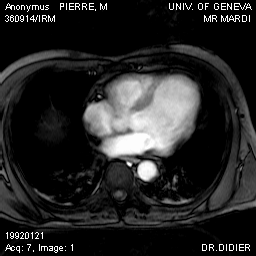
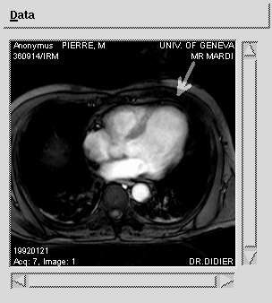

|
| [Up] | [Next] |

It might be desirable for a physician to annotate this image in some form, like marking areas of interest or adding text. In this example we're going to overlay the top right of this image with an arrow using the query
UPDATE mr1 AS image SET image ASSIGN image[0:229, 0:69] + $1/2cThe $1 operator is a variable representing the first argument, conforming to UNIX syntax. In analogy $2 would represent the second argument and $7 the seventh. In this case the argument is itself an MDD object which has to be appended to the query, similar to an email-attachment. RasDaView provides an interface to select an image as $1 argument and attach it automatically to an update query; in this example the image is a white arrow on a black background:
The second line of the query makes the server iterate over all the cells in the domain [0:229, 0:69] of the source object and add half the value of the corresponding $1 cells, thus superimposing the two images. The black background of the $1 object corresponds to a cell value of 0 so the updated image will be identical to the original one in those areas. Looking up the mr1 collection after the execution of this query yields the following result:

| [Up] | [Next] |
05-Mar-1998